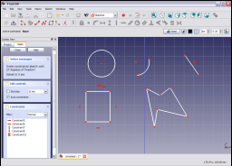
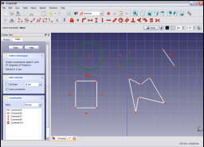
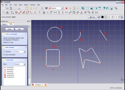
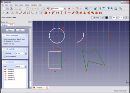
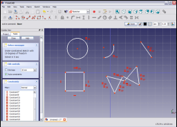
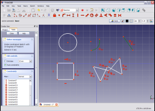
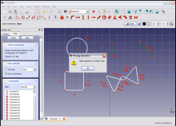

|
| Localização do menu |
|---|
| Sketch → Sketcher constraints → Constrain equal |
| Workbenches |
| Sketcher, PartDesign |
| Atalho padrão |
| Nenhum |
| Veja também |
| Constraint Radius |
Description
The Constrain Equal constraint forces two or more line segments in a line , poly-line or rectangle to have equal length. If applied to arcs or circles the radii are constrained to be equal. It cannot be applied to geometry primitives which are not of the same type (e.g. line segments and arcs).
Operation
The example sketch below contains a number of sketch primitives ( line,poly-line, rectangle, arc and circle).
Select two or more line segments (e.g. line and one side of the rectangle).
Click on the Constrain Equal icon in the Sketcher toolbar (in either the Sketcher or Part Design workbenches) or select the Constrain Equal menu item from the Sketcher constraints sub menu item in either the Sketch or Part Design menu item depending upon which workbench is selected (Sketcher or Part Design) to apply the constraint to the selected items.

Now select the arc and the circle in the sketch.

and apply the Constrain Equal constraint as before.

Now select the line segment, all segments of the poly-line and one of the remaining unconstrained sides of the rectangle

and apply the Constrain Equal constraint as before.

Select the line segment and the arc

and apply the Constrain Equal constraint as before. A pop-up message indicates that the constrained items have to be of the same geometrical type (lines of zero curvature or lines of non-zero curvature).

{kind=link}
{kind=link}
{kind=link}
{kind=link}
{kind=link}
{kind=link}
{kind=link}
{kind=link}
{kind=link}
{kind=link}